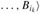

|
|
< Day Day Up > |
|
Throughout this chapter, our correctness arguments have relied on the triangle inequality, upper-bound property, no-path property, convergence property, path-relaxation property, and predecessor-subgraph property. We stated these properties without proof at the beginning of this chapter. In this section, we prove them.
In studying breadth-first search (Section 22.2), we proved as Lemma 22.1 a simple property of shortest distances in unweighted graphs. The triangle inequality generalizes the property to weighted graphs.
Let G = (V, E) be a weighted, directed graph with weight function w : E → R and source vertex s. Then, for all edges (u, v) ∈ E, we have
Proof Suppose that there is a shortest path p from source s to vertex v. Then p has no more weight than any other path from s to v. Specifically, path p has no more weight than the particular path that takes a shortest path from source s to vertex u and then takes edge (u, v).
Exercise 24.5-3 asks you to handle the case in which there is no shortest path from s to v.
The next group of lemmas describes how shortest-path estimates are affected when we execute a sequence of relaxation steps on the edges of a weighted, directed graph that has been initialized by INITIALIZE-SINGLE-SOURCE.
Let G = (V, E) be a weighted, directed graph with weight function w : E → R. Let s ∈ V be the source vertex, and let the graph be initialized by INITIALIZE-SINGLE-SOURCE(G, s). Then, d[v] ≥ δ(s, v) for all v ∈ V , and this invariant is maintained over any sequence of relaxation steps on the edges of G. Moreover, once d[v] achieves its lower bound δ(s, v), it never changes.
Proof We prove the invariant d[v] ≥ δ(s, v) for all vertices v ∈ V by induction over the number of relaxation steps.
For the basis, d[v] ≥ δ(s, v) is certainly true after initialization, since d[s] = 0 ≥ δ(s, s) (note that δ(s, s) is -∞ if s is on a negative-weight cycle and 0 otherwise) and d[v] = ∞ implies d[v] ≥ δ(s, v) for all v ∈ V - {s}.
For the inductive step, consider the relaxation of an edge (u, v). By the inductive hypothesis, d[x] ≥ δ(s, x) for all x ∈ V prior to the relaxation. The only d value that may change is d[v]. If it changes, we have and so the invariant is maintained.
|
d[v] |
= |
d[u] + w(u, v) | |
|
≥ |
δ(s, u) + w(u, v) |
(by inductive hypothesis) |
|
|
≥ |
δ(s, v) |
(by the triangle inequality). |
To see that the value of d[v] never changes once d[v] = δ(s, v), note that having achieved its lower bound, d[v] cannot decrease because we have just shown that d[v] ≥ δ(s, v), and it cannot increase because relaxation steps do not increase d values.
Suppose that in a weighted, directed graph G = (V, E) with weight function w : E → R, no path connects a source vertex s ∈ V to a given vertex v ∈ V. Then, after the graph is initialized by INITIALIZE-SINGLE-SOURCE(G, s), we have d[v] = δ(s, v) = ∞, and this equality is maintained as an invariant over any sequence of relaxation steps on the edges of G.
Proof By the upper-bound property, we always have ∞ = δ(s, v) ≤ d[v], and thus d[v] = ∞ = δ(s, v).
Let G = (V, E) be a weighted, directed graph with weight function w : E → R, and let (u, v) ∈ E. Then, immediately after relaxing edge (u, v) by executing RELAX(u, v, w), we have d[v] ≤ d[u] + w(u, v).
Proof If, just prior to relaxing edge (u, v), we have d[v] > d[u] + w(u, v), then d[v] = d[u] + w(u, v) afterward. If, instead, d[v] ≤ d[u] + w(u, v) just before the relaxation, then neither d[u] nor d[v] changes, and so d[v] ≤ d[u] + w(u, v) afterward.
Let G = (V, E) be a weighted, directed graph with weight function w : E → R, let s ∈ V be a source vertex, and let be a shortest path in G for some vertices u, v ∈ V . Suppose that G is initialized by INITIALIZE-SINGLE-SOURCE(G, s) and then a sequence of relaxation steps that includes the call RELAX(u, v, w) is executed on the edges of G. If d[u] = δ(s, u) at any time prior to the call, then d[v] = δ(s, v) at all times after the call.
Proof By the upper-bound property, if d[u] = δ(s, u) at some point prior to relaxing edge (u, v), then this equality holds thereafter. In particular, after relaxing edge (u, v), we have
|
d[v] |
≤ |
d[u] + w(u, v) |
(by Lemma 24.13) |
|
= |
δ(s, u) + w(u, v) | ||
|
= |
δ(s, v) |
(by Lemma 24.1). |
By the upper-bound property, d[v] ≥ δ(s, v), from which we conclude that d[v] = δ(s, v), and this equality is maintained thereafter.
Let G = (V, E) be a weighted, directed graph with weight function w : E → R, and let s ∈ V be a source vertex. Consider any shortest path p = 〈v0, v1, ..., vk〉 from s = v0 to vk. If G is initialized by INITIALIZE-SINGLE-SOURCE(G, s) and then a sequence of relaxation steps occurs that includes, in order, relaxations of edges (v0, v1), (v1, v2),..., (vk-1, vk), then d[vk] = δ(s, vk) after these relaxations and at all times afterward. This property holds no matter what other edge relaxations occur, including relaxations that are intermixed with relaxations of the edges of p.
Proof We show by induction that after the ith edge of path p is relaxed, we have d[vi] = δ(s, vi). For the basis, i = 0, and before any edges of p have been relaxed, we have from the initialization that d[v0] = d[s] = 0 = δ(s, s). By the upper-bound property, the value of d[s] never changes after initialization.
For the inductive step, we assume that d[vi-1] = δ(s, vi-1), and we examine the relaxation of edge (vi-1, vi). By the convergence property, after this relaxation, we have d[vi] = δ(s, vi), and this equality is maintained at all times thereafter.
We now show that once a sequence of relaxations has caused the shortest-path estimates to converge to shortest-path weights, the predecessor subgraph Gπ induced by the resulting π values is a shortest-paths tree for G. We start with the following lemma, which shows that the predecessor subgraph always forms a rooted tree whose root is the source.
Let G = (V, E) be a weighted, directed graph with weight function w : E → R, let s ∈ V be a source vertex, and assume that G contains no negative-weight cycles that are reachable from s. Then, after the graph is initialized by INITIALIZE-SINGLE-SOURCE(G, s), the predecessor subgraph Gπ forms a rooted tree with root s, and any sequence of relaxation steps on edges of G maintains this property as an invariant.
Proof Initially, the only vertex in Gπ is the source vertex, and the lemma is trivially true. Consider a predecessor subgraph Gπ that arises after a sequence of relaxation steps. We shall first prove that Gπ is acyclic. Suppose for the sake of contradiction that some relaxation step creates a cycle in the graph Gπ . Let the cycle be c = 〈v0, v1,..., vk〉, where vk = v0. Then, π[vi] = vi-1 for i = 1, 2,..., k and, without loss of generality, we can assume that it was the relaxation of edge (vk-1, vk) that created the cycle in Gπ.
We claim that all vertices on cycle c are reachable from the source s. Why? Each vertex on c has a non-NIL predecessor, and so each vertex on c was assigned a finite shortest-path estimate when it was assigned its non-NIL π value. By the upper-bound property, each vertex on cycle c has a finite shortest-path weight, which implies that it is reachable from s.
We shall examine the shortest-path estimates on c just prior to the call RELAX(vk-1, vk, w) and show that c is a negative-weight cycle, thereby contradicting the assumption that G contains no negative-weight cycles that are reachable from the source. Just before the call, we have π[vi] = vi-1 for i = 1, 2,..., k - 1. Thus, for i = 1, 2,..., k - 1, the last update to d[vi] was by the assignment d[vi] ← d[vi-1] + w(vi-1, vi). If d[vi-1] changed since then, it decreased. Therefore, just before the call RELAX(vk-1, vk, w), we have
Because π[vk] is changed by the call, immediately beforehand we also have the strict inequality
d[vk] > d[vk-1] + w(vk-1, vk).
Summing this strict inequality with the k - 1 inequalities (24.12), we obtain the sum of the shortest-path estimates around cycle c:
But
since each vertex in the cycle c appears exactly once in each summation. This equality implies
Thus, the sum of weights around the cycle c is negative, which provides the desired contradiction.
We have now proven that Gπ is a directed, acyclic graph. To show that it forms a rooted tree with root s, it suffices (see Exercise B.5-2) to prove that for each vertex v ∈ Vπ, there is a unique path from s to v in Gπ.
We first must show that a path from s exists for each vertex in Vπ. The vertices in Vπ are those with non-NIL π values, plus s. The idea here is to prove by induction that a path exists from s to all vertices in Vπ. The details are left as Exercise 24.5-6.
To complete the proof of the lemma, we must now show that for any vertex v ∈ Vπ, there is at most one path from s to v in the graph Gπ. Suppose otherwise. That is, suppose that there are two simple paths from s to some vertex v: p1, which can be decomposed into and p2, which can be decomposed into , where x ≠ y. (See Figure 24.9.) But then, π[z] = x and π[z] = y, which implies the contradiction that x = y. We conclude that there exists a unique simple path in Gπ from s to v, and thus Gπ forms a rooted tree with root s.
We can now show that if, after we have performed a sequence of relaxation steps, all vertices have been assigned their true shortest-path weights, then the predecessor subgraph Gπ is a shortest-paths tree.
Let G = (V, E) be a weighted, directed graph with weight function w : E → R, let s ∈ V be a source vertex, and assume that G contains no negative-weight cycles that are reachable from s. Let us call INITIALIZE-SINGLE-SOURCE(G, s) and then execute any sequence of relaxation steps on edges of G that produces d[v] = δ(s, v) for all v ∈ V. Then, the predecessor subgraph Gπ is a shortest-paths tree rooted at s.
Proof We must prove that the three properties of shortest-paths trees given on page 584 hold for Gπ . To show the first property, we must show that Vπ is the set of vertices reachable from s. By definition, a shortest-path weight δ(s, v) is finite if and only if v is reachable from s, and thus the vertices that are reachable from s are exactly those with finite d values. But a vertex v ∈ V - {s} has been assigned a finite value for d[v] if and only if π[v] ≠ NIL. Thus, the vertices in Vπ are exactly those reachable from s.
The second property follows directly from Lemma 24.16.
It remains, therefore, to prove the last property of shortest-paths trees: for each vertex v ∈ Vπ , the unique simple path in Gπ is a shortest path from s to v in G. Let p = 〈v0, v1,..., vk〉, where v0 = s and vk = v. For i = 1, 2,..., k, we have both d[vi ] = δ(s, vi) and d[vi] ≥ d[vi-1] + w(vi-1, vi), from which we conclude w(vi-1, vi) ≤ δ(s, vi) - δ(s, vi-1). Summing the weights along path p yields
Thus, w(p) ≤ δ(s, vk). Since δ(s, vk) is a lower bound on the weight of any path from s to vk, we conclude that w(p) = δ(s, vk), and thus p is a shortest path from s to v = vk.
Give an example of a weighted, directed graph G = (V, E) with weight function w : E → R and source s such that G satisfies the following property: For every edge (u, v) ∈ E, there is a shortest-paths tree rooted at s that contains (u, v) and another shortest-paths tree rooted at s that does not contain (u, v).
Let G = (V, E) be a weighted, directed graph with source vertex s, and let G be initialized by INITIALIZE-SINGLE-SOURCE(G, s). Prove that if a sequence of relaxation steps sets π[s] to a non-NIL value, then G contains a negative-weight cycle.
Let G = (V, E) be a weighted, directed graph with no negative-weight edges. Let s ∈ V be the source vertex, and suppose that we allow π[v] to be the predecessor of v on any shortest path to v from source s if v ∈ V - {s} is reachable from s, and NIL otherwise. Give an example of such a graph G and an assignment of π values that produces a cycle in Gπ . (By Lemma 24.16, such an assignment cannot be produced by a sequence of relaxation steps.)
Let G = (V, E) be a weighted, directed graph with weight function w : E → R and no negative-weight cycles. Let s ∈ V be the source vertex, and let G be initialized by INITIALIZE-SINGLE-SOURCE(G, s). Prove that for every vertex v ∈ Vπ, there exists a path from s to v in Gπ and that this property is maintained as an invariant over any sequence of relaxations.
Let G = (V, E) be a weighted, directed graph that contains no negative-weight cycles. Let s ∈ V be the source vertex, and let G be initialized by INITIALIZE-SINGLE-SOURCE(G, s). Prove that there exists a sequence of |V | - 1 relaxation steps that produces d[v] = δ(s, v) for all v ∈ V.
Let G be an arbitrary weighted, directed graph with a negative-weight cycle reachable from the source vertex s. Show that an infinite sequence of relaxations of the edges of G can always be constructed such that every relaxation causes a shortest-path estimate to change.
Suppose that we order the edge relaxations in each pass of the Bellman-Ford algorithm as follows. Before the first pass, we assign an arbitrary linear order v1, v2,..., v|v| to the vertices of the input graph G = (V, E). Then, we partition the edge set E into Ef ∪ Eb, where Ef = {(vi , vj) ∈ E : i < j} and Eb = {(vi, vj) ∈ E : i > j}. (Assume that G contains no self-loops, so that every edge is in either Ef or Eb.) Define Gf = (V, Ef) and Gb = (V, Eb).
Prove that Gf is acyclic with topological sort 〈v1, v2,..., v|V|〉 and that Gb is acyclic with topological sort 〈v|V|, v|V|-1,...,v1〉.
Suppose that we implement each pass of the Bellman-Ford algorithm in the following way. We visit each vertex in the order v1, v2,..., v|V|, relaxing edges of Ef that leave the vertex. We then visit each vertex in the order v|V|, v|V|-1,..., v1, relaxing edges of Eb that leave the vertex.
Prove that with this scheme, if G contains no negative-weight cycles that are reachable from the source vertex s, then after only ⌈|V | /2⌉ passes over the edges, d[v] = δ(s, v) for all vertices v ∈ V.
Does this scheme improve the asymptotic running time of the Bellman-Ford algorithm?
A d-dimensional box with dimensions (x1, x2,..., xd) nests within another box with dimensions (y1, y2,..., yd) if there exists a permutation π on {1, 2,..., d} such that xπ(1) < y1, xπ(2) < y2,..., xπ(d) < yd.
Argue that the nesting relation is transitive.
Describe an efficient method to determine whether or not one d-dimensional box nests inside another.
Suppose that you are given a set of n d-dimensional boxes {B1, B2,..., Bn}. Describe an efficient algorithm to determine the longest sequence  of boxes such that nests within for j = 1, 2,..., k - 1. Express the running time of your algorithm in terms of n and d.
Arbitrage is the use of discrepancies in currency exchange rates to transform one unit of a currency into more than one unit of the same currency. For example, suppose that 1 U.S. dollar buys 46.4 Indian rupees, 1 Indian rupee buys 2.5 Japanese yen, and 1 Japanese yen buys 0.0091 U.S. dollars. Then, by converting currencies, a trader can start with 1 U.S. dollar and buy 46.4 × 2.5 × 0.0091 = 1.0556 U.S. dollars, thus turning a profit of 5.56 percent.
Suppose that we are given n currencies c1, c2,..., cn and an n × n table R of exchange rates, such that one unit of currency ci buys R[i, j] units of currency cj.
Give an efficient algorithm to determine whether or not there exists a sequence of currencies such that
R[i1, i2] · R[i2, i3] R[ik-1, ik] · R[ik, i1] > 1.
Analyze the running time of your algorithm.
Give an efficient algorithm to print out such a sequence if one exists. Analyze the running time of your algorithm.
A scaling algorithm solves a problem by initially considering only the highest-order bit of each relevant input value (such as an edge weight). It then refines the initial solution by looking at the two highest-order bits. It progressively looks at more and more high-order bits, refining the solution each time, until all bits have been considered and the correct solution has been computed.
In this problem, we examine an algorithm for computing the shortest paths from a single source by scaling edge weights. We are given a directed graph G = (V, E) with nonnegative integer edge weights w. Let W = max(u, v)∈E {w(u, v)}. Our goal is to develop an algorithm that runs in O(E lg W) time. We assume that all vertices are reachable from the source.
The algorithm uncovers the bits in the binary representation of the edge weights one at a time, from the most significant bit to the least significant bit. Specifically, let k = ⌈lg(W + 1)⌉ be the number of bits in the binary representation of W , and for i = 1, 2,...,k, let wi (u, v) = ⌊w(u, v)/2k-i⌋. That is, wi(u, v) is the "scaled-down" version of w(u, v) given by the i most significant bits of w(u, v). (Thus, wk(u, v) = w(u, v) for all (u, v) ∈ E.) For example, if k = 5 and w(u, v) = 25, which has the binary representation 〈11001〉, then w3(u, v) = 〈110〉 = 6. As another example with k = 5, if w(u, v) = 〈00100〉 = 4, then w3(u, v) = 〈001〉 = 1. Let us define δi (u, v) as the shortest-path weight from vertex u to vertex v using weight function wi. Thus, δk(u, v) = δ(u, v) for all u, v ∈ V. For a given source vertex s, the scaling algorithm first computes the shortest-path weights δ1(s, v) for all v ∈ V, then computes δ2(s, v) for all v ∈ V, and so on, until it computes δk(s, v) for all v ∈ V. We assume throughout that |E| ≥ |V| - 1, and we shall see that computing δi from δi-1 takes O(E) time, so that the entire algorithm takes O(k E) = O(E lg W) time.
Suppose that for all vertices v ∈ V, we have δ(s, v) ≤ |E|. Show that we can compute δ(s, v) for all v ∈ V in O(E) time.
Show that we can compute δ1(s, v) for all v ∈ V in O(E) time.
Let us now focus on computing δi from δi-1.
Prove that for i = 2, 3,..., k, we have either wi(u, v) = 2wi-1(u, v) or wi(u, v) = 2wi-1(u, v) + 1. Then, prove that
2δi-1(s, v) ≤ δi(s, v) ≤ 2δi-1(s, v) + |V| - 1
for all v ∈ V.
Define for i = 2, 3,..., k, and all (u, v) ∈ E,
.
Prove that for i = 2, 3,..., k and all u, v ∈ V, the "reweighted" value edge (u, v) is a nonnegative integer.
Now, define as the shortest-path weight from s to v using the weight function . Prove that for i = 2, 3,..., k and all v ∈ V,
and that .
Show how to compute δi (s, v) from δi-1(s, v) for all v ∈ V in O(E) time, and conclude that δ(s, v) can be computed for all v ∈ V in O(E lg W) time.
Let G = (V, E) be a directed graph with weight function w : E → R, and let n = |V |. We define the mean weight of a cycle c = 〈e1, e2,..., ek〉 of edges in E to be
Let μ* = minc μ(c), where c ranges over all directed cycles in G. A cycle c for which μ(c) = μ* is called a minimum mean-weight cycle. This problem investigates an efficient algorithm for computing μ*.
Assume without loss of generality that every vertex v ∈ V is reachable from a source vertex s ∈ V . Let δ(s, v) be the weight of a shortest path from s to v, and let δk(s, v) be the weight of a shortest path from s to v consisting of exactly k edges. If there is no path from s to v with exactly k edges, then δk(s, v) = ∞.
Show that if μ*= 0, then G contains no negative-weight cycles and δ(s, v) = min0≤k≤n-1 δk(s, v) for all vertices v ∈ V.
Show that if μ* = 0, then
for all vertices v ∈ V. (Hint: Use both properties from part (a).)
Let c be a 0-weight cycle, and let u and v be any two vertices on c. Suppose that μ* = 0 and that the weight of the path from u to v along the cycle is x. Prove that δ(s, v) = δ(s, u) + x. (Hint: The weight of the path from v to u along the cycle is -x.)
Show that if μ* = 0, then on each minimum mean-weight cycle there exists a vertex v such that
(Hint: Show that a shortest path to any vertex on a minimum mean-weight cycle can be extended along the cycle to make a shortest path to the next vertex on the cycle.)
Show that if μ* = 0, then
Show that if we add a constant t to the weight of each edge of G, then μ* is increased by t. Use this fact to show that
Give an O(V E)-time algorithm to compute μ*.
A sequence is bitonic if it monotonically increases and then monotonically decreases, or if it can be circularly shifted to monotonically increase and then monotonically decrease. For example the sequences 〈1, 4, 6, 8, 3, -2〉, 〈9, 2, -4, -10, -5〉, and 〈1, 2, 3, 4〉 are bitonic, but 〈1, 3, 12, 4, 2, 10〉 is not bitonic. (See Chapter 27 for a discussion of bitonic sorters, and see Problem 15-1 for the bitonic euclidean traveling-salesman problem.)
Suppose that we are given a directed graph G = (V, E) with weight function w : E → R, and we wish to find single-source shortest paths from a source vertex s. We are given one additional piece of information: for each vertex v ∈ V, the weights of the edges along any shortest path from s to v form a bitonic sequence.
Give the most efficient algorithm you can to solve this problem, and analyze its running time.
|
|
< Day Day Up > |
|